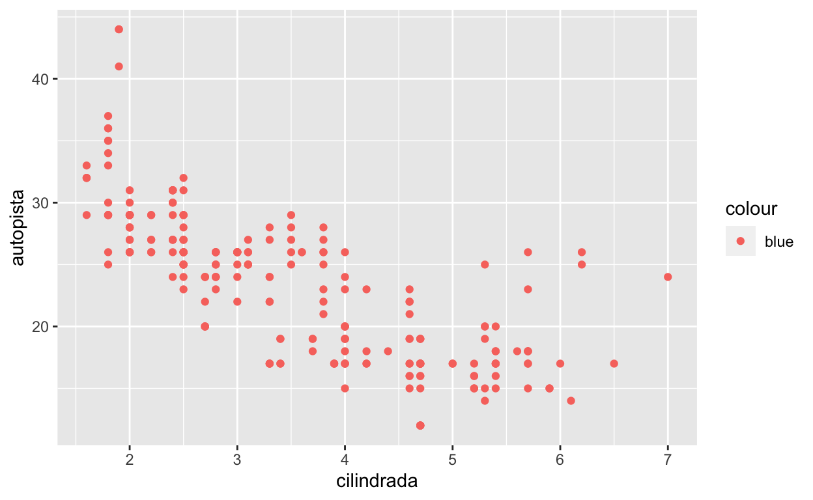

3.2.4
- Ejecuta
ggplot(data = millas). ¿Qué observas?
ggplot(data = millas)- ¿Cuántas filas hay en millas? ¿Cuántas columnas?
nrow(millas)
ncol(millas)- ¿Qué describe la variable
traccion? Lee la ayuda de?millaspara encontrar la respuesta.
?millas- Realiza un gráfico de dispersión de
autopistaversuscilindros.
ggplot(data = millas) +
geom_point(aes(x = cilindros, y = autopista))- ¿Qué sucede cuando haces un gráfico de dispersión (scatterplot) de
claseversustraccion? ¿Por qué no es útil este gráfico?
ggplot(data = millas) +
geom_point(aes(x = traccion, y = clase))3.3.1
- ¿Qué no va bien en este código? ¿Por qué hay puntos que no son azules?

ggplot(data = millas) +
geom_point(mapping = aes(x = cilindrada, y = autopista), color = "blue")- ¿Qué variables en
millasson categóricas? ¿Qué variables son continuas? (Pista: escribe?millaspara leer la documentación de ayuda para este conjunto de datos). ¿Cómo puedes ver esta información cuando ejecutasmillas?
summary(millas)- Asigna una variable continua a
color,size, yshape. ¿Cómo se comportan estas estéticas de manera diferente para variables categóricas y variables continuas?
ggplot(data = millas) +
geom_point(mapping = aes(x = cilindrada, y = autopista, color = ciudad))ggplot(data = millas) +
geom_point(mapping = aes(x = cilindrada, y = autopista, size = ciudad))ggplot(data = millas) +
geom_point(mapping = aes(x = cilindrada, y = autopista, shape = ciudad))- ¿Qué ocurre si asignas o mapeas la misma variable a múltiples estéticas?
ggplot(data = millas) +
geom_point(mapping = aes(x = cilindrada, y = autopista, color = ciudad, size = ciudad))- ¿Qué hace la estética
stroke? ¿Con qué formas trabaja? (Pista: consulta?geom_point)
?geom_pointdf <- data.frame(x = seq_len(26), y = 0:25)
ggplot(data = df) +
geom_point(aes(x, y), shape = df$y, fill = "blue")- ¿Qué ocurre si se asigna o mapea una estética a algo diferente del nombre de una variable, como
aes(color = cilindrada < 5)?
ggplot(data = millas) +
geom_point(mapping = aes(x = cilindrada, y = autopista, color = cilindrada < 5))3.5.1
- ¿Qué ocurre si intentas separar en facetas una variable continua?
ggplot(data = millas) +
geom_point(mapping = aes(x = cilindrada, y = autopista)) +
facet_wrap(~ autopista)- ¿Qué significan las celdas vacías que aparecen en el gráfico generado usando
facet_grid(traccion ~ cilindros)? ¿Cómo se relacionan con este gráfico?
ggplot(data = millas) +
geom_point(mapping = aes(x = traccion, y = cilindros)) +
facet_grid(traccion ~ cilindros)- ¿Qué grafica el siguiente código? ¿Qué hace
.?
ggplot(data = millas) +
geom_point(mapping = aes(x = cilindrada, y = autopista)) +
facet_grid(traccion ~ .)
ggplot(data = millas) +
geom_point(mapping = aes(x = cilindrada, y = autopista)) +
facet_grid(. ~ cilindros)- Mira de nuevo el primer gráfico en facetas presentado en esta sección:
ggplot(data = millas) +
geom_point(mapping = aes(x = cilindrada, y = autopista)) +
facet_wrap(~ clase, nrow = 2)¿Cuáles son las ventajas de separar en facetas en lugar de aplicar una estética de color? ¿Cuáles son las desventajas? ¿Cómo cambiaría este balance si tuvieras un conjunto de datos más grande?
- Lee
?facet_wrap. ¿Qué hacenrow? ¿Qué hacencol? ¿Qué otras opciones controlan el diseño de los paneles individuales? ¿Por quéfacet_grid()no tiene argumentosnrowyncol?
?facet_wrap- Cuando usas
facet_grid(), generalmente deberías poner la variable con un mayor número de niveles únicos en las columnas. ¿Por qué?
?facet_grid3.6.1
- ¿Qué geom usarías para generar un gráfico de líneas? ¿Y para un diagrama de caja? ¿Y para un histograma? ¿Y para un gráfico de área?
ggplot(data = millas) +
geom_line(mapping = aes(x = cilindrada, y = autopista, color = traccion))ggplot(data = millas) +
geom_boxplot(mapping = aes(x = cilindrada, y = autopista, group = traccion, color = traccion))ggplot(data = millas) +
geom_histogram(mapping = aes(x = autopista, fill = traccion))ggplot(data = millas) +
geom_area(mapping = aes(x = cilindrada, y = autopista, fill = traccion))- Ejecuta este código en tu mente y predice cómo se verá el output. Luego, ejecuta el código en R y verifica tus predicciones.
ggplot(data = millas, mapping = aes(x = cilindrada, y = autopista, color = traccion)) +
geom_point() +
geom_smooth(se = FALSE)- ¿Qué muestra
show.legend = FALSE? ¿Qué pasa si lo quitas? ¿Por qué crees que lo utilizamos antes en el capítulo?
- ¿Qué hace el argumento
seengeom_smooth()?
- ¿Se verán distintos estos gráficos? ¿Por qué sí o por qué no?
ggplot(data = millas, mapping = aes(x = cilindrada, y = autopista)) +
geom_point() +
geom_smooth()
ggplot() +
geom_point(data = millas, mapping = aes(x = cilindrada, y = autopista)) +
geom_smooth(data = millas, mapping = aes(x = cilindrada, y = autopista))- Recrea el código R necesario para generar los siguientes gráficos:

ggplot(data = millas, mapping = aes(x = cilindrada, y = autopista)) +
geom_point() +
geom_smooth(se = FALSE)
ggplot(data = millas, mapping = aes(x = cilindrada, y = autopista)) +
geom_point() +
geom_smooth(aes(group = traccion), se = FALSE)
ggplot(data = millas, mapping = aes(x = cilindrada, y = autopista)) +
geom_point(aes(color = traccion)) +
geom_smooth(aes(group = traccion, color = traccion), se = FALSE)
ggplot(data = millas, mapping = aes(x = cilindrada, y = autopista)) +
geom_point(aes(color = traccion)) +
geom_smooth(se = FALSE)
ggplot(data = millas, mapping = aes(x = cilindrada, y = autopista)) +
geom_point(aes(color = traccion)) +
geom_smooth(aes(linetype = traccion), se = FALSE)
ggplot(data = millas, mapping = aes(x = cilindrada, y = autopista)) +
geom_point(color = "white", size = 4) +
geom_point(aes(color = traccion))
# Yo prefiero esta solución
ggplot(data = millas, mapping = aes(x = cilindrada, y = autopista)) +
geom_point(aes(fill = traccion), color = "white", shape = 21, size = 3, stroke = 1)